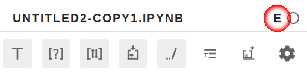

Configuring for the experiment
If you already answered the first form, your Participant ID will be the email address you entered in the form. We will not share the address, but if you prefer to use a different ID, please contact us (jpimentel@ic.uff.br).
Now you need to install and configure Julynter for the experiment. Please follow these steps:
-
Install Julynter
pip isntall julynter -
Start the experiment
julynter experiment startIt will ask you to authorize the collection of some usage data for the experiment. The more data you allow us to collect, the better our capacity to contextualize the experimental trial.
-
Run Jupyter Lab and Julynter
Now, you can open Jupyter Lab and use Julynter for linting your notebooks in real-time. If you have NodeJS, you can run Jupyter Lab normally (
jupyter lab), and it will ask you to rebuild to install the Julynter extension. Otherwise, use the precompiled version of Jupyter Lab with Julynter installed:julynter lab -
Check the installation
Julynter appears on the left panel of Jupyter Lab as a circle with a correct sign (
 ). Open it after opening the notebook to start linting.
). Open it after opening the notebook to start linting.Please, check if it is running in the experiment mode by verifying the existence of an "E" in the top right corner of Julynter:

Please, use Julynter during the development of your next notebooks. You may use it while adding new code to existing notebooks or creating new notebooks. Note, however, that most linting occurs when cells are executed. Thus, if you use it with an existing notebook, you need to re-execute its cells. During the experiment, you may work on the notebooks as you usually do (e.g., creating notebooks, adding, editing, and removing cells, executing them). You may apply the linting suggestions as well.
If you find a linting suggestion useful, please consider clicking in the plus icon that appears when you hover it. Otherwise, please consider clicking in the minus icon. You may also click in the dialog icon to send us a report.
If you just answered the form, we will contact you back in a week to ask about your experience with Julynter. Feel free to contact us at any time.
If you do not have a notebook project to work on the following days, but still want to participate in this experiment, we can provide suggestions.